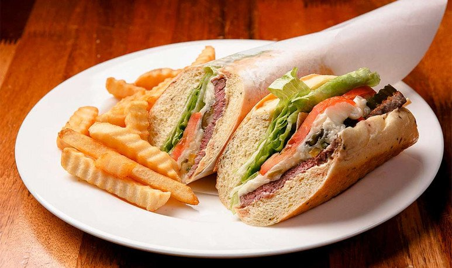
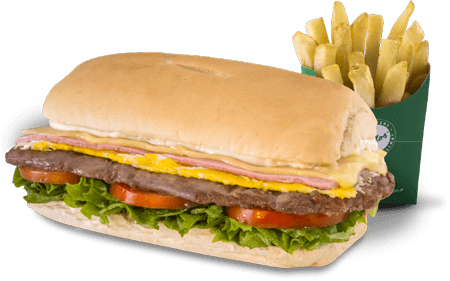
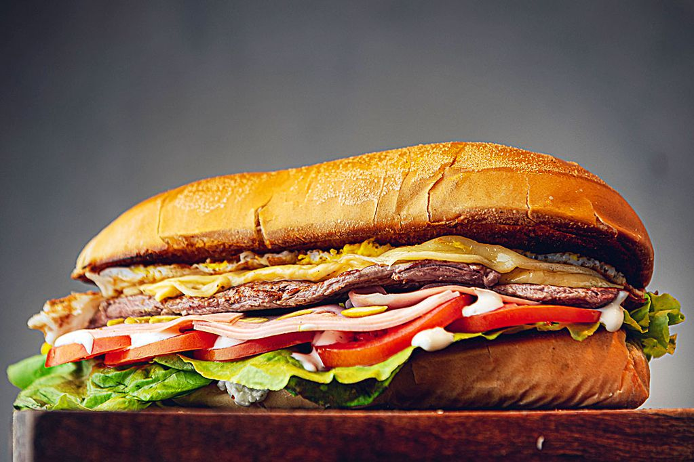
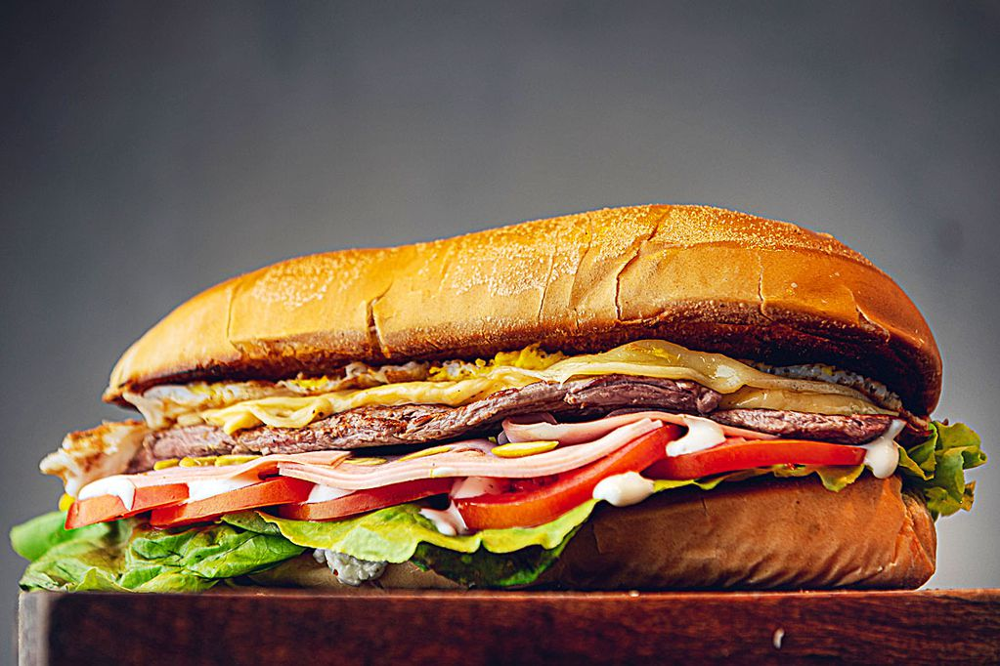

Entre fernet y priteau, los cordobeses tenemos el paladar bien acostumbrado. Hoy te contamos de nuestra comida preferida: el lomito cordobés.
  

El lomito cordobés es el deleite del paladar de muchos. En esta ciudad, comer un lomito es todo un ritual. El momento de la semana en que podemos salir a cenar, o nos damos el gusto de pedir un delivery, está protagonizado por este sándwich. Y es mucho más que un sándwich, es juntadas con amigos, festejos por logros y metas, es celebrar. Esta comida está conformada por la combinación perfecta de pan (preferentemente casero), lomito, lechuga, tomate, huevo, jamón, queso y mayo. Cada restaurant lo hace a su gusto y, lógicamente, le pone su toque especial. Pero hay una condición que sí o sí se debe respetar: la mayonesa tiene que ser casera. Con sus variantes: ajo, provenzal o sin agregados, la mayonesa es el constituyente fundamental del lomito. Es por eso que cada rotisería tiene sus secretos bien guardados. Hablamos con un especialista y nos tiró los tips para hacer un lomito perfecto:
Ingredientes:
- Pan de lomo
- Lomo
- Lechuga repollada
- 1 Huevo
- 1 Tomate
- 50 g de jamón cocido feteado
- 50 g de queso tybo feteado
- Mayo casera
Preparación:
- Para comenzar, cortamos el pan de lomo a la mitad y lo tostamos por dentro en una plancha. Solo un ratito, hasta dorarlo, y lo retiramos.
- En el mismo lugar donde tostamos el pan, tiramos grasita o aceite para luego tirar el bife de lomo. En lo posible, previamente ternizado en la prensa. Y salado de ambos lados.
- En la plancha al lado del bife, hacer el huevo y darle la forma del pan. Tiene que estar alargadito para que el sándwich quede más prolijo y exista un equilibrio de sus ingredientes al probar el primer bocado… ¡mmm!
- Al dar vuelta el bife, le agregamos arriba dos fetas de queso tybo, una de jamón, y el huevito ya cocido.
- Volvemos al pan, le agregamos mayo casera a las dos tapas. La mayo puede ser con chimi o sin chimi, con provenzal, limón, ajo, ¡lo que te guste! Luego de colocar la mayo, elegimos una tapa y le agregamos la lechuguita repollada cortada con rodajas finas de tomate.
- Agarramos la espátula, juntamos el lomo con todos sus ingredientes y lo depositamos en el pan recién preparado. Agregamos la otra tapa del pan ¡y listo!